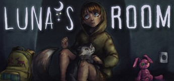
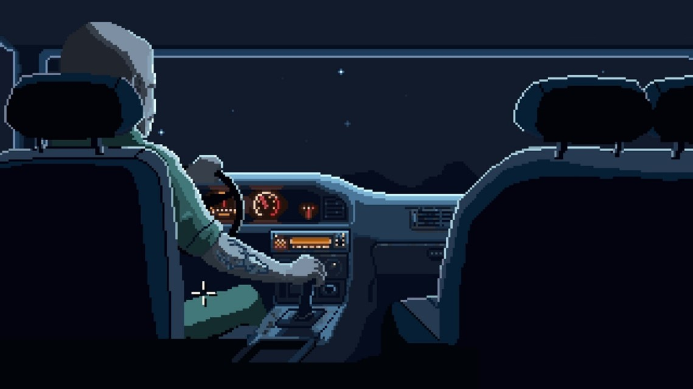
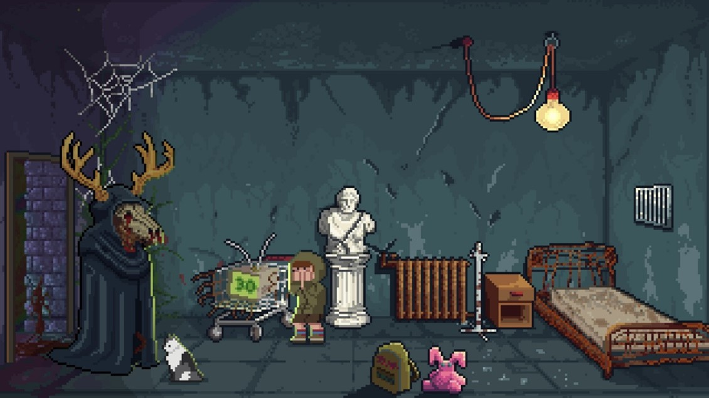
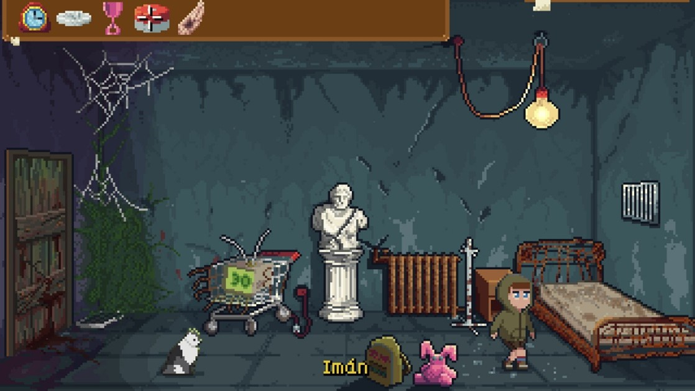
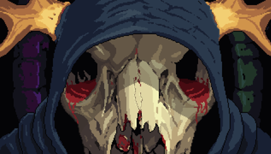
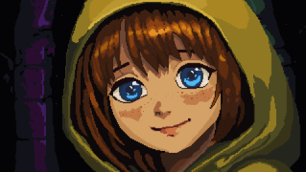

RESEÑA
Luna's Room

Normalmente me gusta empezar a escribir una reseña nada más terminar el juego en cuestión, al menos plasmar las primeras ideas, porque lo tengo más fresco y las ideas están ahí, como que salen prácticamente solas. Pero en este caso no ha sido así.
Terminé Luna’s Room cerca de las doce de la noche y decidí dejarlo reposar, consultarlo con la almohada, como se suele decir. Porque ya os aviso, es un juego que deja poso. Tiene un mensaje muy bonito, pero dentro de una temática bastante adulta y dura.
Así que preferí empezar a escribir al día siguiente, con las ideas más claras. Y sinceramente, creo que fue una buena decisión. Porque estoy seguro de que después de leer este artículo, vais a ir directamente a jugarlo.
Luna’s Room nos plantea una experiencia íntima en la que, a través de una única habitación y los objetos que hay en ella, iremos reconstruyendo recuerdos y entendiendo poco a poco qué está pasando realmente.
La premisa es sencilla, la protagonista, Luna, despierta en una habitación extraña, le van llegando recuerdos a cuentagotas y deberá encajar todas las piezas para escapar. Para ello contará con la ayuda de su gato, Miga.
Pero como suele pasar en este tipo de juegos, lo importante no es tanto lo que ves, sino lo que hay detrás, porque este juego habla sobre todo de la pérdida, como reza en la propia página de Steam y un tema como ese pocas veces se narra de una forma directa.
Ambientación

Desde el primer momento el juego ya te coloca en una situación bastante incómoda.
Arrancamos con una escena nocturna, alguien conduciendo, y un “despierta, Luna” que ya te deja un poco descolocado. Y acto seguido aparecemos en una habitación completamente destartalada, con elementos extraños como un carro de la compra destrozado con un televisor dentro y nuestro personaje tirado en el suelo.

No hay una banda sonora constante ni un hilo musical que te acompañe todo el tiempo, algo en lo que suelo fijarme mucho. De hecho, en muchos momentos lo único que tienes es un zumbido ambiental, un sonido casi imperceptible que genera una sensación bastante incómoda.
Y funciona, porque transmite justo lo que tiene que transmitir… mal rollo.
Además, desde los primeros compases, cuando conoces al “Guardián”, ya intuyes que el juego no va por un camino precisamente amable. Todo apunta a algo turbio, aunque al principio no tengas del todo claro lo que pasa.
Gráficos
El apartado visual apuesta por un pixel art bastante cuidado, se nota el cariño puesto y las horas de dedicación.
Las animaciones, tanto de Luna como del gato, Miga, están muy bien resueltas. Especialmente ese detalle de la respiración constante de Luna, que evita que todo se sienta estático, algo que se agradece mucho teniendo en cuenta que la acción se desarrolla en un espacio muy reducido.
No es un juego que busque el espectáculo visual, pero dentro de su propuesta cumple muy bien y aporta lo necesario para reforzar la atmósfera.
También he de reconocer que hay un par de primeros planos que me han encantado.
Jugabilidad
A nivel jugable estamos ante una aventura gráfica bastante clásica en su planteamiento.
Al acercar el cursor a los objetos aparecen los textos correspondientes, con clic izquierdo interactuamos y con el derecho examinamos más a fondo. Además, contamos con un menú superior desde el que accedemos al inventario, muy en la línea de las aventuras de toda la vida, donde podremos combinar objetos entre sí y por supuesto, con zonas del escenario.
En cuanto a los puzles, el juego está bastante guiado. Son intuitivos y, en muchos casos, el propio juego te va dando pistas bastante directas a través de los comentarios de Miga.

Esto reduce bastante la exigencia si lo comparamos con propuestas más clásicas o más “hardcore”, pero también creo que es una decisión totalmente consciente. Aquí el foco no está en ponerte a prueba, sino en que avances y vivas la historia.
Eso sí, hay ciertos puzles que puedes resolverlos en el orden que quieras, no es tan lineal en ese sentido como quizá otras aventuras, aunque realmente solo hay un camino que seguir.
Además, el juego introduce un sistema de conversaciones, centrado principalmente en nuestras interacciones con Miga.
En determinados momentos podremos hablar con nuestro inseparable gato, especialmente cuando la situación se complica, y no solo aporta contexto narrativo, sino que también funciona como una pequeña ayuda para avanzar.
Miga tiene un carácter muy particular, con ese punto ácido que más de una vez me ha sacado una sonrisa. Y no es solo un alivio cómico, como suele decirse en cine, es de esos personajes que están ahí acompañándote durante toda la experiencia y que terminan aportando mucho más de lo que parece a simple vista.
Dificultad
La dificultad, seamos claros, es baja.
Es un juego asequible, accesible incluso para alguien que no esté muy acostumbrado a las aventuras gráficas. Y en ese sentido puede ser un muy buen punto de entrada al género.
Si buscas retos complejos o puzles que te hagan estrujarte el cerebro durante horas, este no es tu juego. Pero tampoco pretende serlo.
Guion
Creo, sin temor a equivocarme, que es aquí donde el juego realmente marca la diferencia.
Nada más empezar, Luna está inconsciente en la habitación y escucha una voz que resulta ser la de su gato. Pasado el shock de que su gato hable, Luna se da cuenta de que Miga tiene bastante carácter. Es sarcástico e incluso va dejando comentarios con cierta mala leche y, en muchas ocasiones, actúa casi como si fuera la voz de su conciencia.
La verdad es que funciona muy bien porque está constantemente ahí, soltando la puntilla.
Por otro lado, tenemos al Guardián, una figura bastante inquietante que se expresa mediante acertijos y que refuerza esa sensación de que todo lo que está ocurriendo tiene un trasfondo mucho más profundo.
El juego toca temas como la vida, la muerte o incluso la reencarnación. Pero no lo hace de forma directa, sino a través de simbolismos, dobles sentidos y pequeñas piezas que tienes que ir encajando.
La premisa, como decía, es clara, escapar de la habitación, pero lo importante es todo lo que hay debajo, es ahí es donde el juego se vuelve realmente interesante.
Además, el personaje de Luna va haciendo referencias constantes a su vida personal, especialmente a la figura de su padre, que tiene bastante peso dentro de la historia, y en menor medida a su madre.
Es un guion más complejo de lo que parece, donde muchas veces pesa más lo que no se dice que lo que se dice.
Sonido
El juego arranca con una canción bastante potente que ya marca un poco el tono inicial.
A partir de ahí, la música aparece en momentos muy concretos y cuando lo hace, toca la fibra emocional. No está de forma constante, pero cuando entra, tiene sentido.

No hay doblaje como tal, salvo en un personaje concreto, lo cual también refuerza ese tono íntimo y personal que busca el juego.
Impacto emocional
Aquí es donde el juego me ha tocado la fibra. Hay un momento en el que empiezas a entender realmente qué está pasando y ahí es donde se te hace un nudo en la garganta (al menos eso me pasó a mí).
Evidentemente, aquí también entra en juego la experiencia personal de cada uno. En mi caso, siendo padre, hay ciertas cosas que me han tocado especialmente.
Pero más allá de eso, es un juego que te hace pensar. Que no te deja indiferente. Y que, cuando terminas, te obliga a darle una vuelta a todo lo que has vivido.
Duración
La duración ronda entre los 60 y 90 minutos, dependiendo de lo que te detengas o de lo que tardes en resolver los puzles.

Es una experiencia breve, muy contenida, que casi se siente como ver una película.
En este punto me cuesta ser objetivo, porque yo valoro positivamente que la duración sea contenida, por supuesto, siempre y cuando esté justificado y sea lo suficientemente rico en narrativa e intensidad.
Finales
El juego cuenta con dos finales.
El punto de decisión es bastante claro, lo que facilita que puedas guardar partida y ver ambos sin problema.
Y lo interesante es que no hay un final claramente bueno o malo. La elección se siente más como algo personal que como una decisión correcta o incorrecta.
Me ha gustado mucho incluso la parte final de agradecimientos, acompañada por una música increíble de Alex “AP Nightgame” y además con nombres conocidos, algunos de los cuales he tenido el placer de entrevistar.
Conclusiones
Para mí, es de lo mejor que he jugado este año, así sin anestesia.
Me recuerda en cierta manera a Upstairs, también de este año 2026, tanto por su duración como por esa capacidad de contar una historia adulta y con un trasfondo bastante turbio.
Creo que ahí está la clave, no quiere ser un juego difícil, sino hacerte sentir algo. Y para mí, lo consigue, vaya que si lo consigue.
Así que, sinceramente, enhorabuena a Jacob por el trabajo realizado, porque aquí hay algo más que una simple aventura gráfica.